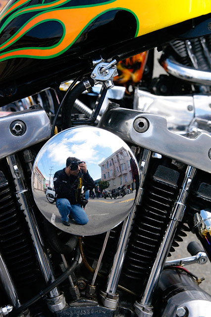

I ride my bike to school
Every day is the same... I get up at 7 am and grab some quick breakfast before going to school. My school is not very far from my house but it is just far enough that it takes to long to walk. therefore I ride my bike.
I have a simple bike like the one in the picture. Nothing special about it what so ever and i´m so tired of it. I want a motorcycle! A new shining powerful motorcycle with racing stripes. Or maybe instead of racing stripes there could be stickers of flames. Like on this picture:
